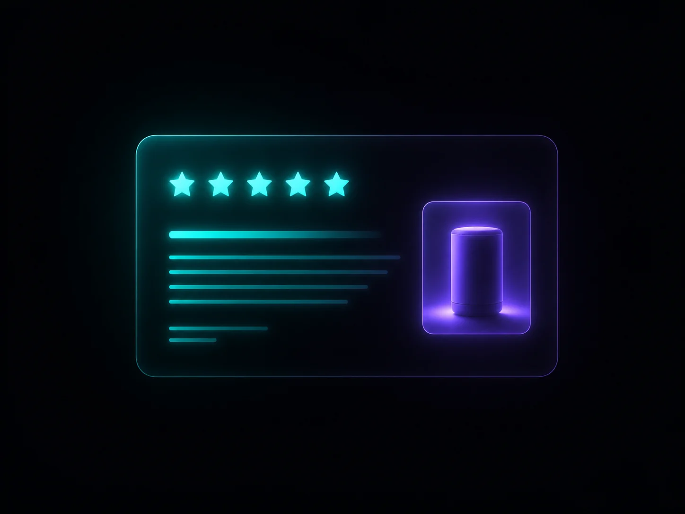
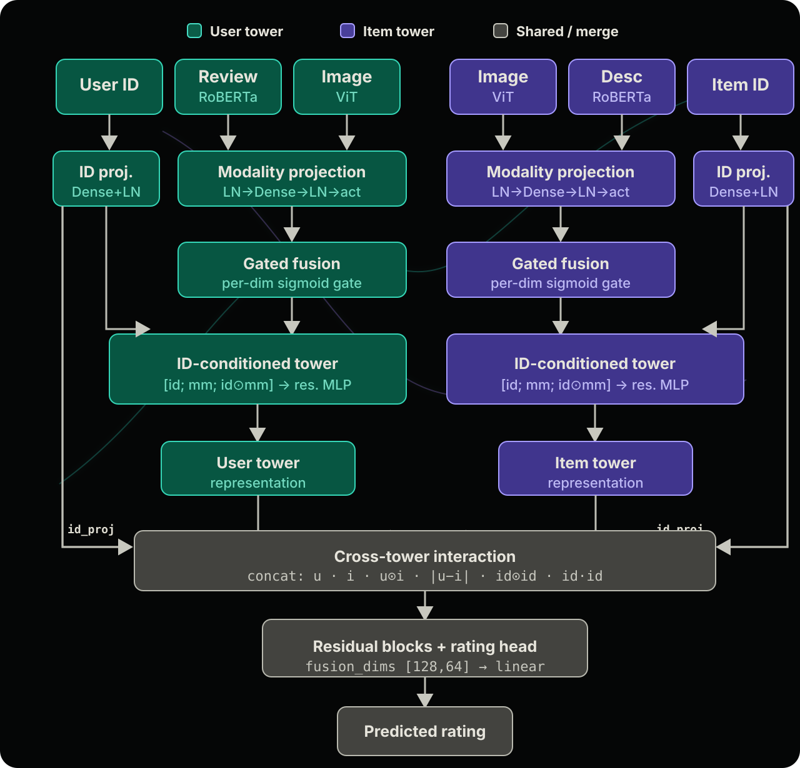

추천의 전제 조건
클릭·구매·재방문 추천도 결국 “이 사람이 이 콘텐츠를 얼마나 좋아할까?”를 추정하는 문제로 귀결됩니다. 별점 예측은 그 선호를 가장 명시적으로 학습하는 방법입니다.
Why rating prediction
많은 사람이 추천을 “무엇을 보여줄지”의 문제로만 봅니다. 하지만 실제 추천 알고리즘을 만들려면 그 전에 이 사용자가 특정 상품·조건·서비스를 얼마나 선호하는지를 정량적으로 알아야 합니다.
온라인 쇼핑에서는 그 선호를 가장 직관적으로 드러내는 신호가 별점(평점)입니다. 수천만 건의 리뷰가 이미 별점으로 채점되어 있기 때문에, 별점 예측은 추천 연구에서 가장 보편적이고 검증 가능한 첫 단계이기도 합니다.
클릭·구매·재방문 추천도 결국 “이 사람이 이 콘텐츠를 얼마나 좋아할까?”를 추정하는 문제로 귀결됩니다. 별점 예측은 그 선호를 가장 명시적으로 학습하는 방법입니다.
1~5점 스케일은 MAE·RMSE·MAPE 같은 지표로 성능을 공정하게 비교할 수 있어, 모델 개선과 ablation 실험의 기준이 됩니다.
텍스트·사진만 있고 점수가 없다면 학습 자체가 어렵습니다. VITAL-Rec은 리뷰에 담긴 글·이미지로 아직 남기지 않은 별점을 추정해, 이후 랭킹·추천 리스트로 확장할 수 있는 기반을 만듭니다.
Why multimodal
온라인 쇼핑 리뷰에는 글과 사진이 함께 담깁니다. 옷과 전자제품은 특히 색감, 디자인, 실물 느낌 같은 시각 정보가 구매 판단에 큰 영향을 줍니다.
그래서 VITAL-Rec은 글만 읽는 추천이 아니라, 리뷰·상품 양쪽의 텍스트와 이미지를 동시에 해석하는 멀티모달 AI 추천 모델로 설계했습니다.

Meta가 공개한 대표적 언어모델 RoBERTa로 리뷰·상품 설명의 맥락과 감성을 768차원 벡터로 압축합니다.
이미지를 패치 단위로 이해하는 Vision Transformer(ViT)로 제품·리뷰 사진의 시각 단서를 같은 차원으로 추출합니다.
Feature extraction
원시 리뷰 글과 이미지를 그대로 신경망에 넣지 않습니다. 대규모 코퍼스로 이미 학습된 트랜스포머 인코더가 의미를 뽑아 주고, VITAL-Rec은 그 표현 위에서 별점을 학습합니다.
Text · RoBERTa-base
Facebook AI(Meta)가 제안한 Robustly Optimized BERT Approach로, 리뷰 문장의 뉘앙스·불만·칭찬 포인트를 문맥 단위로 포착하는 데 강한 모델입니다.
Image · ViT-base
Google이 제안한 ViT(Vision Transformer)는 CNN 대신 패치(patch)를 토큰처럼 취급해, 사진 속 색·형태·질감 관계를 트랜스포머로 학습한 시각 AI의 대표 주자입니다.
Model structure
추출된 RoBERTa·ViT 벡터와 사용자·상품 ID를 Two-Tower 멀티모달 AI 추천 모델에 넣습니다. 사용자 타워는 리뷰 관점, 상품 타워는 메타·이미지 관점으로 같은 구조를 공유합니다.

각 타워에서 RoBERTa·ViT 768차원 표현을 공유 잠재공간으로 투영한 뒤 게이트 융합으로 결합하고, ID 임베딩과 곱해 문맥화합니다. 사용자·상품 타워는 원소곱·절대차·ID 내적 등 다층 상호작용을 거친 후 residual MLP와 선형 회귀 헤드가 1~5점 별점을 출력합니다. TensorFlow로 학습하고, 인코더 추출만 PyTorch·Hugging Face를 사용합니다.
Gated modal fusion
단순히 평균을 내거나 이어붙이는 대신, VITAL-Rec은 샘플마다 텍스트와 이미지의 비중을 학습합니다.
gate = σ(W·[text ; image])fused = gate ⊙ text + (1 − gate) ⊙ imageApplied stack
모델 학습 환경부터 사전학습 인코더, 데이터 통합 방식, 추천 아키텍처까지 전시에서 바로 확인할 수 있도록 정리했습니다.
macOS, Ubuntu 22.04, NVIDIA CUDA GPU, Docker
Visual Studio Code, Cursor, Jupyter Notebook, GitHub, Notion
Python 3.9, TensorFlow 2.18, PyTorch 2.6, HuggingFace Transformers 4.51
텍스트: Meta RoBERTa-base (리뷰·상품 설명 → 768-d CLS). 이미지: Google ViT-base-patch16-224 (상품·리뷰 사진 → 768-d CLS).
Amazon Reviews 2023 카테고리 데이터(Subscription Boxes 등)에서 리뷰 텍스트, 리뷰 이미지, 상품 메타 정보를 통합했습니다.
Two-Tower(User / Item), Gated Multimodal Fusion, ID-Multimodal Context Gating, Residual Block, Product·Abs Diff·ID Dot 상호작용 융합 레이어
Performance
실제 아마존 의류·전자제품 데이터에서 VITAL-Rec은 가장 강한 기존 멀티모달 모델보다 오차를 더 낮췄습니다. 낮을수록 좋습니다.
Ablation Study
이미지를 빼거나 융합 방식을 단순화하면 오차가 커집니다. 즉 사진을 함께 쓰는 것과 똑똑하게 합치는 게이트 융합이 모두 중요합니다.
Team
역할별로 프로젝트 총괄, 모델 설계, 실험, 데이터 분석과 결과 시각화를 나누어 진행했습니다.